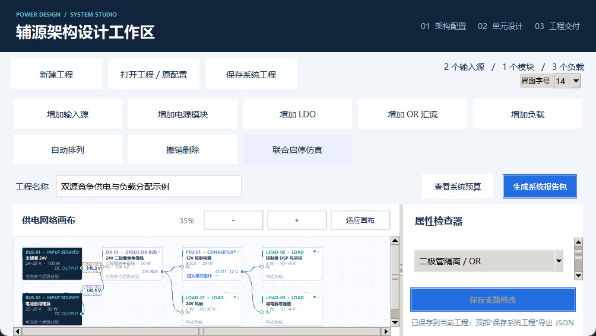

02 建立供电网络并检查系统预算
画布描述电能从外部输入源经过变换器或 OR 母线到达负载的路径。系统预算检查端口电压和功率分配。上电时序与短时浪涌另由联合启停仿真计算。
系统画布 → 增加输入源、增加电源模块、增加 LDO、增加 OR 汇流或增加负载。
操作步骤
- 按供电层级添加节点 先放外部输入源，再放转换模块和负载。需要主备竞争供电时，把两个源经各自的隔离二极管接到同一个 OR 母线。母线可接多个下游。
- 连接指定端口 从输出端口拖到下游输入端口。隔离多路电源先确认所需 OUT 编号，再连线。还可在下游的属性检查器用“新增供电关系（保留现有支路）”选择上游。
- 核对隔离支路 单击支路，在属性检查器选择“直连”或“二极管隔离 / OR”。输入对应 Vf，确认“启用此供电支路”，再点“保存支路修改”。多源共用一个输入时逐一确认每条路径。
- 同步设计输入边界 点电源模块，在侧栏用“沿用上游电压”把评估出的输入范围写入单元，再进入详细设计核对 Vinmin 和 Vinmax。只替换与设计相符的输入边界。
- 检查全网 点“查看系统预算”，逐项查看容量和电压接口。检查正常状态，并定位逐源掉电或单源独供的结果。调整端口、负载容量或上游电源后重新复核。

沿箭头确认实际的上游输出和下游输入。在属性检查器核对当前选中对象，保存更改后再查看系统预算。
输入字段
| 字段或选项 | 单位或取值 | 输入的含义及用途 |
|---|---|---|
| 最小电压 / 最大电压 | V | 输入源在已评估工况的端点电压。输入容量检查与端点共同使用。 |
| 输入容量 / OR 母线容量 | W | 外部输入源或汇流母线可提供的功率，用于与最大评估负担对照。 |
| 负载功耗 | W | 终端标称功耗，占用所接的上游输出端口。变换器本身也按其参数预估输入功率。 |
| 负载允许输入上下限 | V | 传给接口检查的允许范围。某一侧填 0 表示放开该侧边界。 |
| 二极管压降 Vf | V | 选择 OR 支路时的固定压降，影响后段可用电压，以及该支路的预算损耗。 |
| 启用节点 / 启用此供电支路 | 勾选 | 决定本场景计入的节点与连接。可停用某一路查看供电变化。 |
结果核对
OR 按二极管后电压最高的支路评估。同电压时分别评估各支路独占供电，容量应按最不利已评估场景核对。
连线后单元输入范围仍需检查。发现失电或输入超出工作范围，先追踪上游选择和 Vf，再决定是否调整单元。
如果预算提示覆盖不完整，查看未覆盖的候选场景。负载阶跃、短路和启动电流使用对应的仿真任务。